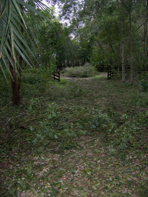

2017 Holiday Web Page

| Erich and Margie's 2017 Holiday Web Page | |
January We had 6 guests over for New Year's Eve. We saw a pretty good Robin Williams impersonator at The Elusive Grape. Erich's father Henry and his partner Jerry visited for 5 days. We did the beach, St. Augustine, two art museums, two thrift shops, trivia, and lots of good food. Erich got a letter praising his first puzzle book from an inmate in a Massachusetts prison. Erich (and some of his friends) predicted his Stat student's grades based only on their ID photos. Someone else opened up a credit card in Erich's name. Erich started playing poker again, after 3 years off. We celebrated the Chinese New Year at Barb's annual party. One of Erich's students asked during a quiz where the calculator key was that did the horizontal line (that most of us know as division). Erich recommends not listening to the news of our new president. Margie recommends the Dr. Blake Mysteries on PBS.
February Erich had severe neck pain for two weeks. Erich accidentally deleted a chunk of his computer hard drive. Erich had the flu for the first time, and missed his second day of work ever due to illness. As he was dealing with that and the aftermath for the next 3 months (!), his friend Barbara came to town for a rather surreal visit. Erich recommends the Netflix zombie series "Santa Clarita Diet". Margie recommends the Netflix series "The Ranch".
March We went to Orlando to see Brian Smalley. On the way home, Dunkin' was closin' and gave us a dozen free donuts! One of Erich's students (yes, the same one mentioned in January) was caught cheating on a quiz. We visited Erin and Tom for the day, for lots of drinking and laughing. All the lights went out in the grocery store. One of Erich's students killed himself. Our friend Deborah in Atlanta sent us a humorous sign (below, left) after part of their Interstate collapsed. Our friend Barbara sent us the a sign (below, right) spotted in Europe. Erich recommends the Netflix series "Iron Fist". Margie recommends cutting down all the trees so she wouldn't have to rake.
April The car in front paid for Erich's breakfast at the McDonald's drive-thru. Erich gave candy-filled plastic eggs to his students. Erich and Margie now use different toilet tissue brands. Another one of Erich's students cheated. Erich's computer stopped working, but started again after he reinstalled the operating system. Margie got a cool fortune. Erich recommends Sheryl Crow's new album "Be Myself". Margie recommends Missy's lemon curd cake with lemon whipped cream.
May We attended Gamblefest in St. Augustine for a weekend of wonderful weather. We listened to folk acts on several stages, including some old favorites (Magda Hiller, Chelsea Sadler, Dewey Via) and some new discoveries (BrotherBrother, Grace Pettis, Aslyn & the Naysayers). Erich's predicted grades and actual grades had a correlation of 0.34, which turned out to be statistically significant. Erich's oldest friend Barbara did even better with a correlation of 0.36. In doing battle with a spider, Margie was bit by ... a piece of heavy tile. Margie saw a drug deal go down. Erich tried making pad thai, took one bite, and threw it out. A hawk came to our water dish. We went to Lake Mary to see Brian Smalley. Erich recommends Lady Antebellum's new album "Heart Break". Margie recommends folk artist Mean Mary.
June Erich went to Chicago for 5 days to visit his father. He had drinks on the 96th floor of the John Hancock Building, ate Bulgarian food for the first time, went to art galleries, took an architectural river tour, met a lot of his father's friends, saw a dozen Frank Lloyd Wright homes, saw anti-Trump and pro-LGBTQ protests, and brought a lot of his father's art home. We saw a stop sign printed in lower case. Gamble ate a wasp. We saw Dianne Martin-Karelovich and Rod MacDonald play folk music at the Winter Park Library. At the Sonic drive-through, we received more money back than we paid. Erich recommends pop artist Jess Penner. Margie recommends Red Robin's brownie mint shake with Bailey's Irish Creme. And then a nap.
July While we were walking in New Smyrna Beach, we passed a woman who said "It looks like you guys like each other." We celebrated Independence Day with Missy and Barb by playing a Chinese game and grilling German sausages. Margie named Erich's drink of choice the KahRumBa, for the Kahlua, Rum Chata, and Bailey's it contains. We went to St. Augustine to listen to John Winters, Amy Hendrickson, and Dewey Via. Erich visited his friends Erin and Tom in DC, complete with mini-golf, a day in wine country, two days of exploring memorials on the mall, Annapolis, Georgetown, and the best doughnuts and Greek Tapas ever. We celebrated National Cheesecake Day with the best cheesecake in the area: Chili's. Erich recommends waiting for cooler weather to explore DC. Margie recommends (re)listening to some Ray Stevens.
August Erich finished watching 7 years of reruns of "Scrubs". We went to see Brian Smalley in Mount Dora. We attended a games party, and hosted one the following week. We went to St. Louis for Erich's 30th college reunion. While there, Erich saw a chess tournament, Margie visited the botanical gardens, Erich went to an elk preserve, we saw a King Tut exhibit and a male fashion exhibit, we built a bonfire, we played disc golf, we played a lot of games, and we saw the totally awesome total solar eclipse. Erich recommends the browser game Supernode. Margie recommends never flying Frontier Airlines, since our return from St. Louis was delayed 17 hours.
September We lost power for 8 full days due to Hurricane Irma. No air conditioning, no water, and no fridge/freezer made for a rough week. On top of that, our roof was punctured by a falling tree, so we had a leak, and a dance with insurance adjusters and roofers. One of Erich's students greeted him in class with "How's it hanging, Big Dog?" Erich's friend Barbara started teaching in China, and sent us some amusing pictures. Erich recommends the browser game Boomshine. Margie recommends Guy Clark's music, and his biography "Without Getting Caught or Killed".
October We attended the retirement party of Nancy who had been math secretary for 35 years. We had dinner with Roger, who was visiting from Texas, and who taught in our department 25 years ago. We went to the Lake County Folk Festival, where we enjoyed Passerine, Rachel Grubb, The Back Porch Revival Band, Luke Wagner, The Blackwater Creek Bluegrass Band, and many others. We saw Brian Smalley on the way home. Erich had a blueberry bagel with blueberry cream cheese. With fresh blueberries on top. Erich recommends Missy's apple cake with rum sauce. Margie recommends the movie The Florida Project.
November Erich discovered 4-person chess. Erich got his first email from Croatia. We went to the Deland Art Festival, where we saw Magda Hiller & Tanner Johnson and Ben Prestage perform. Erich's third puzzle book came out. We saw Guen when she came to town for a day. We celebrated Thanksgiving with Missy and Barb and an international student Vivian. November ended on a sad note. We had to give away our dog, Gamble. An unlikely scenario resulted in him biting a neighborhood kid. In exchange for a formal report not being filed, we agreed to re-home Gamble to a place that knows and loves him, and which will keep him secure. It has been an adjustment. Erich recommends all 11 pages of this web page. Margie recommends keeping busy.
December Erich decided to retire in August 2018, and gave his notice. We attended Jay and Marilyn's house-warming party. We went to a 3-course pot luck dinner at 3 different houses in DeLeon Springs. We attended Michele's solstice party in New Smyrna Beach, and watched the sunset and dolphins. On Christmas, we opened presents and went to the beach for 20 mph winds. We've clearly been together too long, for we bought the exact same Christmas cards for each other. Erich got his first email from Mauritius. We had our carpets steam cleaned for the first time. Our lane was repaved. As usual, we plan to have some friends over for New Year's Eve. Erich recommends Deborah's chocolate Yule log. Margie recommends Deborah's sourdough bread.
Erich's holiday puzzles can be found here. You can see our archive of previous holiday web pages here.

 |